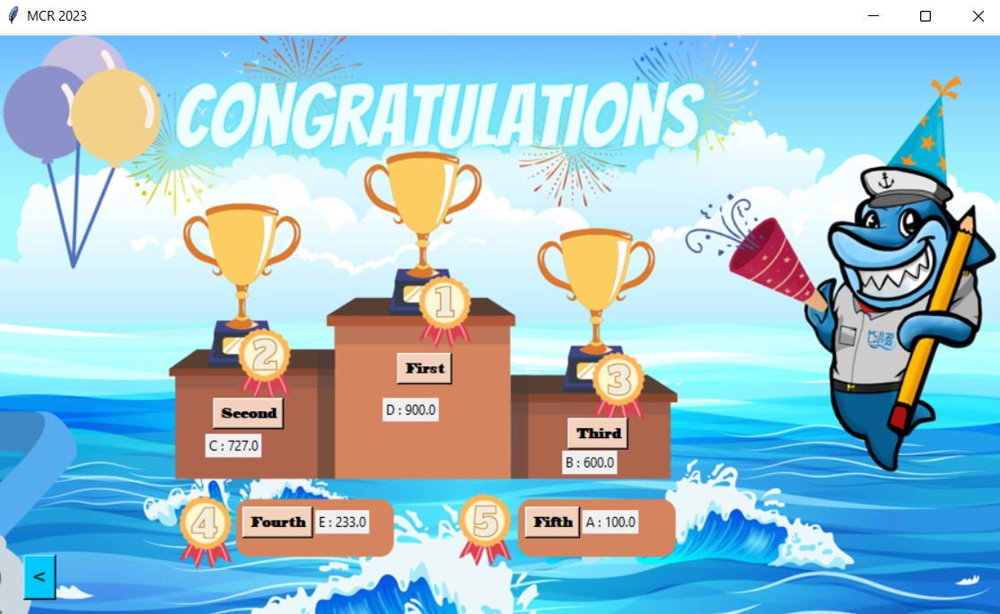
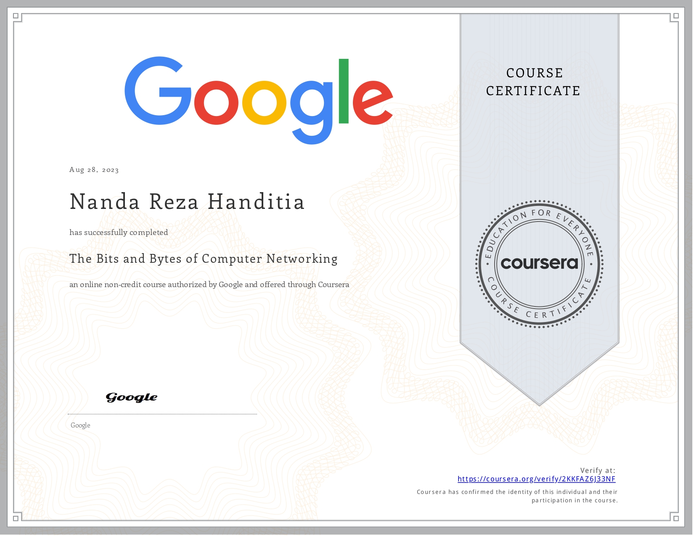
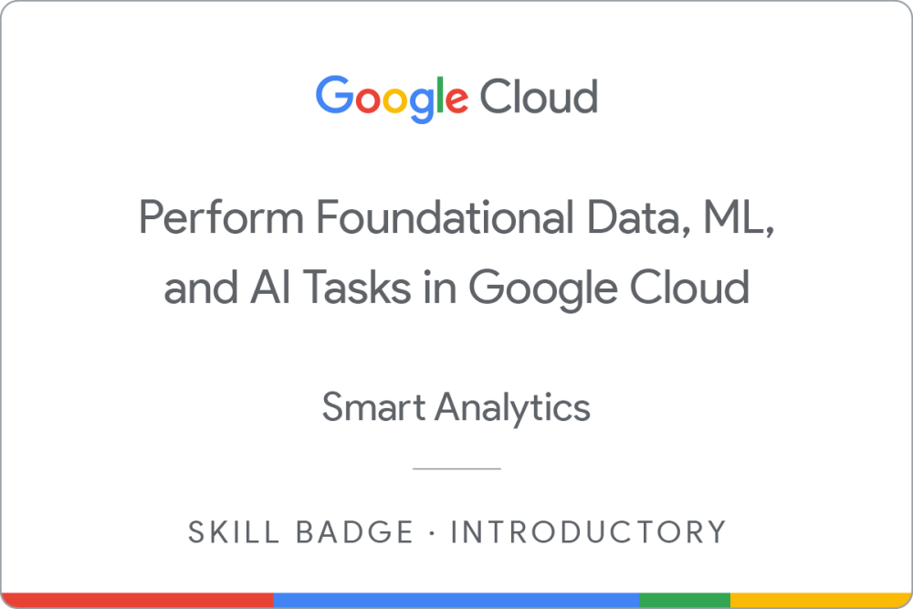

I am an active student majoring in Mathematics in the State University of Surabaya.My passion for data processing and content creation has led me to continually expand my knowledge and skills in these areas. I have not only honed my programming abilities but have also delved into data analytics, data visualization, and machine learning, allowing me to extract valuable insights from data and create compelling narratives.
In the realm of system analysis, I have gained expertise in identifying inefficiencies, optimizing processes, and implementing innovative solutions. My experience in programming extends to various languages and frameworks, enabling me to develop robust and efficient software applications tailored to specific needs.
As for organizational management, I have taken on leadership roles in community projects and acquired proficiency in project management, team coordination, and strategic planning. My effective communication skills have proven invaluable in conveying complex technical concepts to diverse audiences and fostering collaboration among team members.
My commitment to community organization activities has not wavered, and I continue to dedicate my time and skills to initiatives that drive positive change. Moreover, my experience as an academic tutor has deepened my understanding of pedagogy and instructional design, allowing me to create engaging educational content.
I am eager to apply my well-rounded skill set and experiences to tackle complex challenges, drive innovation, and contribute meaningfully to projects that align with my interests and expertise. My dedication to lifelong learning ensures that I stay at the forefront of advancements in data processing, content creation, and technology in general.
Curriculum Vitae
Education Level
1. The S1 Mathematics program typically refers to the undergraduate program in Mathematics (Sarjana Mathematics or Bachelor of Mathematics) offered by UNESA.
2. This program is designed to provide students with a strong foundation in mathematics, covering various mathematical concepts, theories, and applications.
3. Students in this program usually go through a structured curriculum that includes courses in calculus, algebra, statistics, geometry, and other areas of mathematics.
4. The program may offer specialization options in fields such as applied mathematics, pure mathematics, or mathematical modeling, depending on the university's curriculum.
Work Experiences
BIMBEL & PRIVAT NGAGEL SURABAYA - Math and Science Tutor
1. **Subject Matter Expertise**:
- Proficiency in math and science concepts relevant to the respective grade levels.
- Thorough understanding of the curriculum and educational standards for SD and SMP.
2. **Teaching Experience**:
- Demonstrated effectiveness in teaching the subject areas.
- Ability to adapt teaching methods to cater to the diverse learning needs of students.
3. **Communication Skills**:
- Excellent communication skills in both English and the local language.
- Capacity to explain intricate concepts in a clear and comprehensible manner.
4. **Technology Integration**:
- Proficiency in utilizing educational technology and tools to enhance the teaching and learning process.
- Familiarity with online platforms for remote or blended learning.
5. **Student Understanding**:
- Capability to assess individual students' learning requirements and tailor teaching strategies accordingly.
- Empathy and patience when working with students of varying abilities and backgrounds.
6. **Curriculum Development**:
- Skill in crafting engaging and effective lesson plans and educational materials.
- Competence in aligning teaching materials with curriculum standards.
7. **Assessment and Evaluation**:
- Proficiency in designing equitable and precise assessments to gauge student progress.
- Ability to provide constructive feedback and support students in their academic growth.
8. **Classroom Management**:
- Effective classroom management skills to sustain a positive and productive learning environment.
- Strategies for addressing behavioral issues and fostering a respectful atmosphere.
9. **Collaboration Skills**:
- Willingness to collaboratively work with parents, colleagues, and school administrators.
- Active participation in professional development and continuous improvement.
10. **Professional Ethics**:
- Commitment to upholding ethical standards in education, including principles of fairness, honesty, and confidentiality.
- Adherence to school policies and regulations.
These basic skills are crucial for a math and science tutor in a tutoring (Bimbel) setting to assist students in achieving a strong understanding and success in Mathematics and Science subjects at the elementary (SD) and junior high school (SMP) levels.
Organisational Experience
**HIMATIKA Unesa (Mathematics Student Association, University of Surabaya)**
- **Position:** Head of Advocacy and Human Rights Division
- **Duration:** February 2022 - Present
- **Responsibilities:**
- Coordinating the drafting of student organization regulations (ormawa).
- Overseeing the succession of leadership within the organization.
- Representing student aspirations to the university administration.
- Consolidating student position decisions on various issues related to the organization's activities.
**MATH CLUB**
- **Duration:** August 2018 - March 2021
- **Position:** Education and Reasoning Division Staff
- **Description:**
- Participated in extracurricular activities focused on mathematics.
- Prepared for various mathematics competitions and Olympiads.
**D'Laras**
- **Duration:** August 2019 - March 2021
- **Position:** Member
- **Description:**
- Engaged in extracurricular activities specializing in traditional Javanese musical instrument training (Karawitan).
**Student Council of Public Junior High School 1 Tulangan**
- **Duration:** August 2015 - July 2017
- **Position:** Head of Academic, Arts, and Sports Division
- **Responsibilities:**
- Facilitated and supported students' academic, artistic, and sports interests.
- Appreciated and recognized the talents and abilities of students in these areas.
Mathematics Olympiad Assessment Application

Programming language: Python
A Mathematics Olympiad Assessment Application is software designed for the assessment and evaluation of participants in mathematics Olympiad competitions. Mathematics Olympiads are contests or competitions that test the mathematical skills and abilities of students. These competitions are usually designed to challenge participants with complex mathematical problems that go beyond the typical school curriculum.
The Mathematics Olympiad Assessment Application can have various features, including:
1. **Problem Generation:** It can generate mathematical problems and questions suitable for Olympiad-level competitions. These problems often require creative and advanced problem-solving skills.
2. **Scoring and Evaluation:** The application can automatically score and evaluate participants' responses to the mathematical problems, providing immediate feedback on their performance.
3. **User Management:** It may have features for managing participant profiles, registration, and tracking their progress over time.
4. **Reporting:** The application can generate reports and statistics about participants' performance, which can be useful for organizers, teachers, and students to assess their strengths and weaknesses.
5. **Practice and Preparation:** Some applications may offer practice materials and resources to help participants prepare for mathematics Olympiads.
6. **Online Competitions:** In some cases, the application may facilitate online mathematics Olympiad competitions, allowing participants to compete with others from different locations.
These applications are often used by educational institutions, teachers, and organizations that host mathematics Olympiad events to streamline the assessment process and make it more efficient. They play a crucial role in nurturing and identifying talented young mathematicians.
Programming language: Python
The "Evacuation Route of Karanganyar Regency" is an application designed to provide crucial information and guidance to residents and authorities in the Karanganyar Regency of Indonesia during emergency situations, especially natural disasters such as earthquakes, floods, volcanic eruptions, or other events that may require evacuation.
Here are some key features and applications of the "Evacuation Route of Karanganyar Regency":
1. **Emergency Information:** The application provides real-time updates on emergency situations, including alerts, warnings, and information on the type and location of the disaster.
2. **Evacuation Routes:** It offers detailed maps and directions for designated evacuation routes. These routes are carefully planned to ensure the safety of residents during evacuations. Users can access maps that highlight safe paths to evacuation centers and other secure locations.
3. **Location-based Services:** The app uses GPS and location data to determine the user's current location and provide relevant information about nearby evacuation routes, shelters, and emergency services.
4. **Emergency Contacts:** It includes a list of important contact numbers, including local authorities, emergency services, and disaster management agencies. Users can easily call for assistance in case of emergencies.
5. **Offline Access:** To ensure accessibility during emergencies, the application may have offline capabilities, allowing users to access critical information even when internet connectivity is limited.
6. **User Education:** The app may also include educational resources on disaster preparedness, providing tips and guidelines on how to respond during emergencies.
7. **Community Engagement:** Users may have the ability to report incidents or request assistance through the application, facilitating community engagement and coordination during disasters.
8. **Multilingual Support:** To ensure inclusivity, the app may offer multiple language options to cater to a diverse user base.
The "Evacuation Route of Karanganyar Regency" application serves as a vital tool for disaster management and preparedness, helping residents and authorities navigate and respond to emergencies effectively. It plays a crucial role in saving lives and minimizing the impact of natural disasters on the community. Click Here to try the application.
The Bits and Bytes of Computer Networking

"The Bits and Bytes of Computer Networking" is a phrase often used to describe the fundamental concepts and components of computer networking. In the context of computer networking, "bits" and "bytes" refer to the basic units of digital information. Here's a brief explanation of each term:
1. **Bits:** A bit is the smallest unit of digital information and can have one of two values, typically represented as 0 or 1. It is the foundation of all digital data and is used to represent the on/off state of electronic switches in computer hardware. Bits are combined to represent more complex data.
2. **Bytes:** A byte is a group of 8 bits. Bytes are used to represent larger units of data, such as characters, numbers, or other information. For example, a single character of text is typically encoded using one byte.
In the context of computer networking, understanding bits and bytes is essential because data transmission and communication between devices and systems involve the exchange of binary data. Networking professionals and administrators need to be familiar with these concepts to design, configure, and troubleshoot networks effectively.
The phrase "The Bits and Bytes of Computer Networking" may also be used as the title of educational materials, articles, or books that explain the foundational concepts of computer networking, including data transmission, protocols, addressing, and network topologies, among others. It serves as a starting point for individuals looking to gain knowledge and expertise in the field of computer networking. Click here
Perform Foundational Data, ML, and AI Tasks in Google Cloud

Performing foundational data, machine learning (ML), and artificial intelligence (AI) tasks in Google Cloud means using Google's tools and services to work with data and create smart computer programs.
1. **Storing Data:** You can store your data securely in Google Cloud.
2. **Cleaning and Changing Data:** You can make your data cleaner and better for analysis.
3. **Creating Smart Programs:** You can build programs that can learn and make predictions from data.
4. **Looking at Data:** You can see your data in graphs and charts.
5. **Using Pre-Made Smart Tools:** Google has ready-made tools that can understand text, images, and more.
6. **Protecting Data:** You can make sure your data is safe.
7. **Working Together:** Different parts of your work can work together smoothly.
8. **Checking and Managing:** You can keep an eye on how things are going and control them.
9. **Making Programs Public:** You can share your programs with others.
10. **Managing Costs:** You can keep track of how much everything costs.
In simple terms, Google Cloud helps you do lots of important things with data and smart programs, making your work easier and more efficient. Click here
Build and Secure Networks in Google Cloud
Building and securing networks in Google Cloud involves creating a reliable, scalable, and secure infrastructure to support your applications and services. Google Cloud offers various tools and services to help you establish and protect your network. Here's an explanation of how to build and secure networks in Google Cloud:
**1. VPC (Virtual Private Cloud):** A VPC is your private network in the Google Cloud. It allows you to create isolated segments within your cloud environment.
**2. Subnets:** Within a VPC, you can create subnets to segment your resources logically. You can set up different subnets for various purposes, such as web servers, databases, and application servers.
**3. Firewall Rules:** Google Cloud provides a firewall service that lets you control incoming and outgoing traffic to and from your virtual machines (VMs). You can define rules to allow or deny specific types of traffic based on IP addresses, ports, and protocols.
**4. Cloud Load Balancing:** Google Cloud offers load balancers that distribute incoming traffic across multiple VM instances to ensure high availability and performance of your applications. It also provides global load balancing for distributing traffic across different regions.
**5. VPN (Virtual Private Network):** You can establish VPN connections to securely connect your on-premises data centers or other cloud providers to your Google Cloud VPC.
**6. Cloud Interconnect:** Google Cloud Interconnect offers dedicated and private network connections between your on-premises network and Google Cloud, providing low-latency and reliable connectivity.
**7. Identity and Access Management (IAM):** IAM allows you to control who can access your network resources and what actions they can perform. You can assign roles and permissions to users and service accounts.
**8. DDoS Protection:** Google Cloud provides protection against Distributed Denial of Service (DDoS) attacks, helping to mitigate potential threats and ensure the availability of your services.
**9. Private Service Connect:** This service enables secure and private connections between your VPC and Google and third-party services, reducing exposure to the public internet.
**10. Network Monitoring and Logging:** Google Cloud offers tools like Cloud Monitoring and Cloud Logging to help you monitor network performance, detect anomalies, and analyze logs for security and compliance.
**11. Security Policies:** You can define security policies to enforce network security best practices, such as controlling egress traffic and segmenting resources.
**12. Compliance and Auditing:** Google Cloud adheres to various industry compliance standards and provides audit logs to help you meet regulatory requirements and track network activity.
In summary, building and securing networks in Google Cloud involves creating a structured network infrastructure, implementing security measures, and managing access to resources. This ensures that your applications and data remain protected and accessible while taking advantage of Google Cloud's scalability and reliability.
Click here
Contact
Thank you for your time and attention. I look forward to the opportunity to collaborate with you on future projects. Please feel free to contact me anytime using the email address or phone number provided above. I'm ready to listen and assist with any questions or requests you may have. See you!!
e-mail: c284bsx3199@bangkit.academy
 I am an active student majoring in Mathematics in the State University of Surabaya.My passion for data processing and content creation has led me to continually expand my knowledge and skills in these areas. I have not only honed my programming abilities but have also delved into data analytics, data visualization, and machine learning, allowing me to extract valuable insights from data and create compelling narratives.
In the realm of system analysis, I have gained expertise in identifying inefficiencies, optimizing processes, and implementing innovative solutions. My experience in programming extends to various languages and frameworks, enabling me to develop robust and efficient software applications tailored to specific needs.
As for organizational management, I have taken on leadership roles in community projects and acquired proficiency in project management, team coordination, and strategic planning. My effective communication skills have proven invaluable in conveying complex technical concepts to diverse audiences and fostering collaboration among team members.
My commitment to community organization activities has not wavered, and I continue to dedicate my time and skills to initiatives that drive positive change. Moreover, my experience as an academic tutor has deepened my understanding of pedagogy and instructional design, allowing me to create engaging educational content.
I am eager to apply my well-rounded skill set and experiences to tackle complex challenges, drive innovation, and contribute meaningfully to projects that align with my interests and expertise. My dedication to lifelong learning ensures that I stay at the forefront of advancements in data processing, content creation, and technology in general.
I am an active student majoring in Mathematics in the State University of Surabaya.My passion for data processing and content creation has led me to continually expand my knowledge and skills in these areas. I have not only honed my programming abilities but have also delved into data analytics, data visualization, and machine learning, allowing me to extract valuable insights from data and create compelling narratives.
In the realm of system analysis, I have gained expertise in identifying inefficiencies, optimizing processes, and implementing innovative solutions. My experience in programming extends to various languages and frameworks, enabling me to develop robust and efficient software applications tailored to specific needs.
As for organizational management, I have taken on leadership roles in community projects and acquired proficiency in project management, team coordination, and strategic planning. My effective communication skills have proven invaluable in conveying complex technical concepts to diverse audiences and fostering collaboration among team members.
My commitment to community organization activities has not wavered, and I continue to dedicate my time and skills to initiatives that drive positive change. Moreover, my experience as an academic tutor has deepened my understanding of pedagogy and instructional design, allowing me to create engaging educational content.
I am eager to apply my well-rounded skill set and experiences to tackle complex challenges, drive innovation, and contribute meaningfully to projects that align with my interests and expertise. My dedication to lifelong learning ensures that I stay at the forefront of advancements in data processing, content creation, and technology in general. Building and securing networks in Google Cloud involves creating a reliable, scalable, and secure infrastructure to support your applications and services. Google Cloud offers various tools and services to help you establish and protect your network.
Building and securing networks in Google Cloud involves creating a reliable, scalable, and secure infrastructure to support your applications and services. Google Cloud offers various tools and services to help you establish and protect your network.